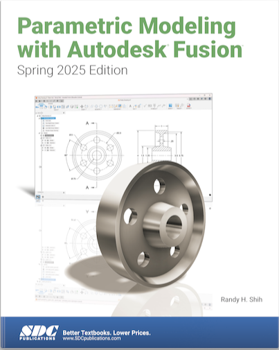

Architectural Drafting and Design- 7th Addition (AD&D) ISBN: 978-1-285-16573-8

AutoCAD and its Applications—Comprehensive, AutoCAD 2020, 27TH Edition Shumaker/Madsen (AAC) ISBN: 978-1635638660

Parametric Modeling with Autodesk Fusion - Spring 2025 Edition
Shih, Randy H. Parametric Modeling with Auodesk Fusion - Spring 2025 Edition. SDC Publications, 2025, www.SDCpublications.com.
